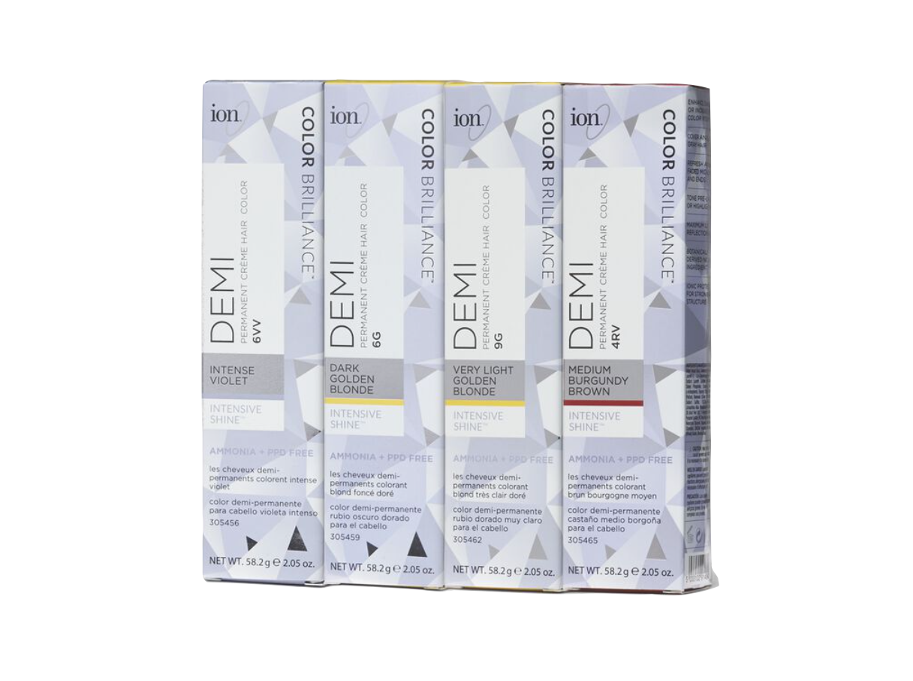
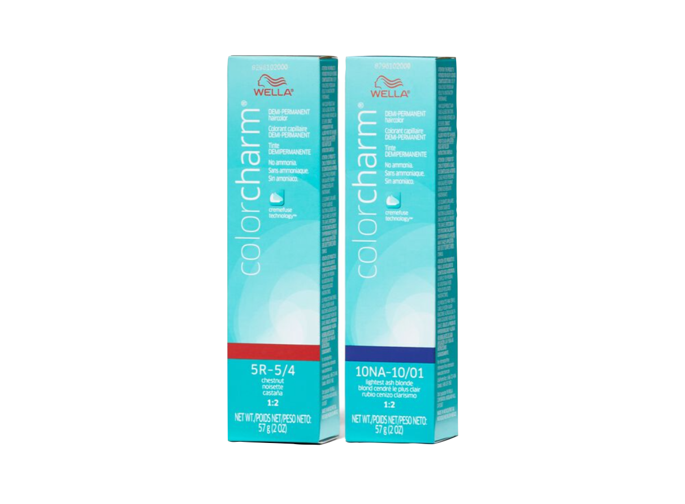
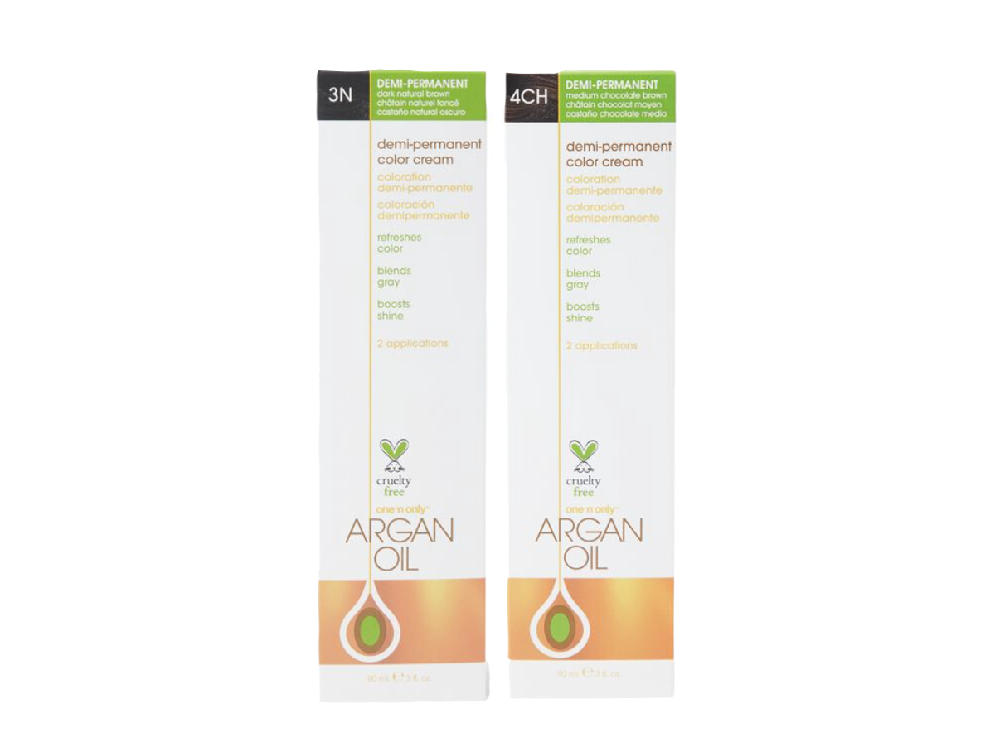
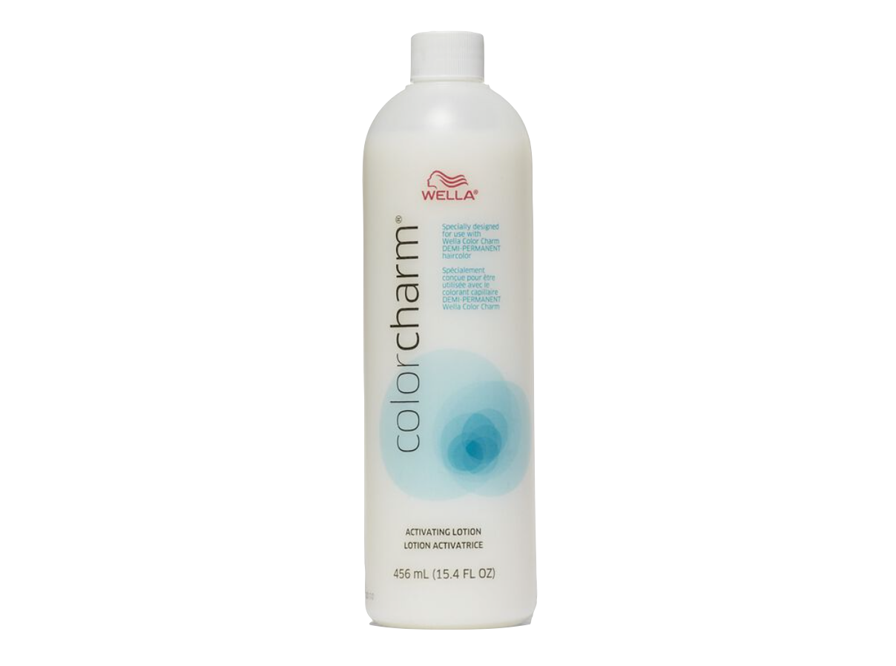
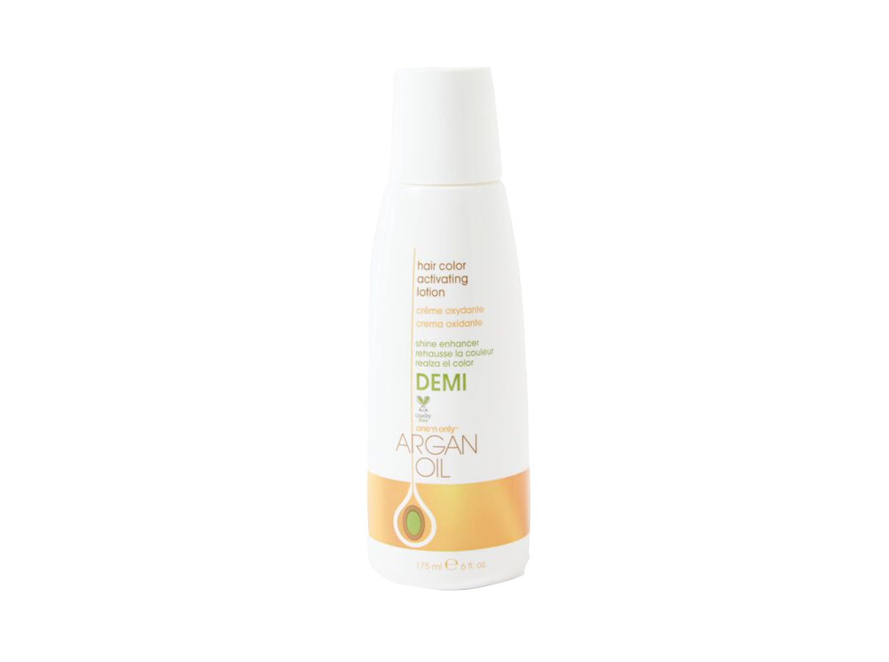

+


Demi- Permanent color is a halfway point between Semi & Permanent color. Used with a special peroxide - usually called "demi developer" or simply a 6 vol developer - the cuticle is lifted slightly, depositing the color a bit more thouroghly.
These dyes typically last 2-3 weeks. Similar to fashion colors, you may need to lighten your hair for your desired outcome.
for more info, see
Mixing Ratios
Decoding Names
Hair Color
home